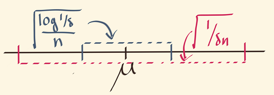
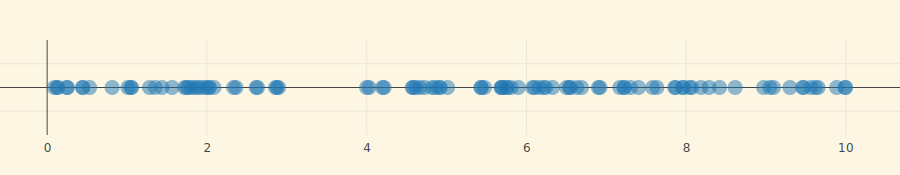
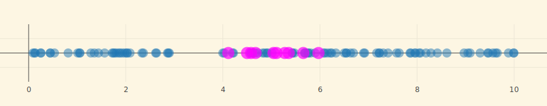
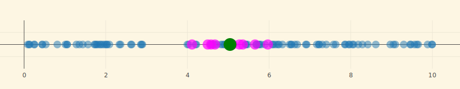
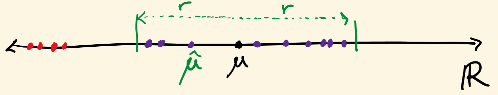
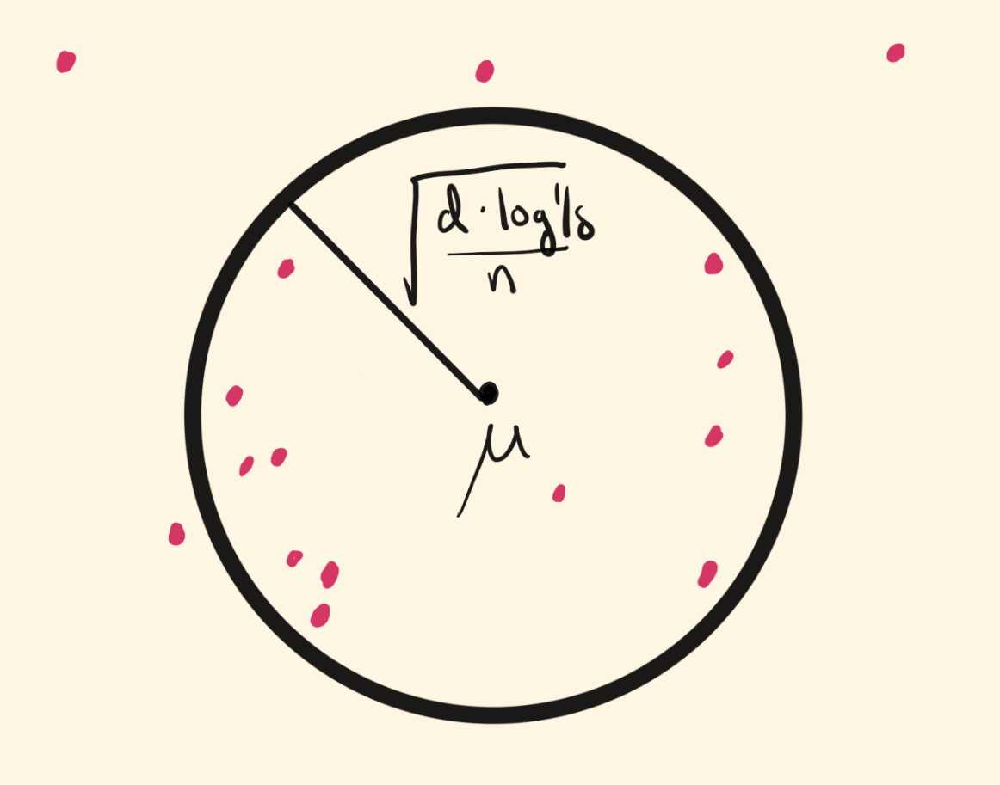

(loading loading loading -- advance slide)
[sam hopkins (miller fellow, uc berkeley)]{.center .blue}
input: $X_1,\ldots,X_n \in \R^d$ independent copies of X
output: estimator $\hat{\mu}(X_1,\ldots,X_n)$ of $\mu = \E X$.
for this talk assume isotropic: [$\E (X - \mu)(X - \mu)^\top = I$]{.blue}
[obvious "algorithm" -- the empirical mean]{.center}
empirical mean: [$\overline{\mu} = \tfrac 1 n \sum X_i$]{.blue}
mean square error: $\E \| \overline{\mu} - \mu \|^2 = \frac 1 n \E \|X - \mu\|^2 = \frac d n$
[what about the tail?]{.center .magenta}
first, d = 1. [how small is $\Pr(| \overline{\mu} - \mu | > t)$?]{.magenta}
confidence interval (c.i.): $\Pr(| \overline{\mu} - \mu | > t) \leq \delta$ implies δ-c.i. of width t
$$\underbrace{X \sim \cN(\mu,1)}_{\text{strong (gaussian) assumption}} \Rightarrow \underbrace{\Pr( |\overline{\mu} - \mu| > t ) \leq \exp(-t^2 n)}_{\text{thin (gaussian) tail}}$$
$$\underbrace{X \text{ has } \E (X - \mu)^2 \leq 1}_{\text{weak (2nd moment) assumption}} \Rightarrow \underbrace{\Pr (| \overline{\mu} - \mu| > t) \leq \frac 1 {t^2 n}}_{\text{fat tail}}$$
[]{.center}
only assume $\E X, \E X^2$ are finite.
also occur in high dimensions: corruptions, power laws in large networks, etc.
recall: i.i.d. samples X1, …, Xn of X, try to estimate $\mu = \E X$
[how confident can you be?]{.magenta} [is there an estimator $\hat{\mu}$ with $\Pr( |\hat{\mu} - \mu| > t ) \leq \exp(-\Omega(t^2 n))$ when X is heavy-tailed?]{.fragment}
no. [but you can fake it!]{.fragment .red}
theorem (old):
for every t, exists $\hat{\mu}_t$ such that $\Pr( | \hat{\mu}_t - \mu | > t ) \leq \exp(-\Omega(t^2 n))$
and $\hat{\mu}_t$ is poly-time computable
[can estimate μ as if X were Gaussian, even if only $\E X, \E X^2$ exist]{.magenta .center}
[what happens for d > 1?]{.red .center}
same story, now with added curse of dimensionality
gaussian case:
$X \sim \cN(\mu, I) \Rightarrow \Pr( \|\overline{\mu} - \mu\| > t + \underbrace{\sqrt{d/n}}_{\approx \E \|\overline{\mu} - \mu \| } ) \leq \underbrace{\exp(-t^2 n)}_{d\text{-independent subgaussian tail}}$
heavy-tailed case:
covariance $I \Rightarrow \Pr( \|\overline{\mu} - \mu\| > t ) \leq \underbrace{\frac d {t^2 n}}_{d\text{-dependent fat tail}}$
$X \sim \cN(\mu, I) \Rightarrow \Pr( \|\overline{\mu} - \mu\| > t + \underbrace{\sqrt{d/n}}_{\approx \E \|\overline{\mu} - \mu \| } ) \leq \underbrace{\exp(-t^2 n)}_{d\text{-independent subgaussian tail}}$
theorem (lugosi-mendelson, 2018):
for every t, exists $\hat{\mu}_t$ such that
$$\Pr \left ( \| \hat{\mu}_t - \mu \| > O \left (t + \sqrt{d/n} \right ) \right )\leq \exp(-t^2 n)$$
assuming only $\E(X-\mu)(X-\mu)^\top = I$.
[new combinatorial notion of high-dimensional median]{.fragment}[, appears to require exp(d) time]{.fragment}
[theorem (this work): same, but $\hat{\mu}_t$ is computable in time O(dn)+(dt)O(1)]{.magenta}
covariance I, n samples
(disclaimer: "tail" not strictly accurate because one estimator $\hat{\mu}_t$ for each t)
| estimator | dim. | tail | time | ref. |
|---|---|---|---|---|
| empirical mean | any | d/t2n | poly | folklore |
| (many) | 1 | exp(−t2n) | poly | (many) |
| geometric median | any | exp(−t2n/d) | poly | [[Minsker 13, Hsu-Sabato 13]]{.small} |
| tournament median | any | exp(−t2n) | exp | [[Lugosi-Mendelson 18]]{.small} |
| median-sdp | any | exp(−t2n) | poly | this work |
theorem: given X1, …, Xn, δ, can find $\hat{\mu}$ such that
$$
\Pr \left ( \left \| \hat{\mu} - \mu \right \| > C \left ( \sqrt{\frac{d}{n}} + \sqrt{\frac{\log(1/\delta)}{n}} \right ) \right ) \leq \delta \, ,
$$
i.e. if δ = exp(−t2n),
$$ \Pr \left ( \left \| \hat{\mu} - \mu \right \| > C \left ( \sqrt{\frac dn } + t \right ) \right ) \leq \exp(-t^2 n)$$
in time O(nd)+(dlog(1/δ))O(1).
main innovation: new semidefinite programming (sdp) algorithm for high-dimensional median, based on sum of squares method (sos).
[sos familiarity is not a prerequisite for this talk.]{.magenta}
1. the d = 1 case: median of means 2. lugosi and mendelson's median 3. median-sdp
[[nemirovsky-yudin, jerrum-valiant-vazirani, alon-matias-szegedy]]{.cite}
X1, …, Xn i.i.d. copies of X with $\E X = \mu$ and $\E (X - \mu)^2 = 1$
empirical mean δ-c.i. width $O\Paren{ \sqrt{\frac{1}{n\delta}}}$
median of means δ-c.i. width $O \Paren{ \sqrt{\frac{\log(1/\delta)}{n}}}$
[1/δ becomes log(1/δ)]{.magenta}
[]{.fragment}
[]{.fragment}
[]{.fragment}
key insight: number of outliers concentrates even when sum of outliers does not.
Z1, …, Zk are bucketed averages, $\E Z = \mu$ and $\E(Z - \mu)^2 = \tfrac kn$
def: Zi "inlier" if |Zi − μ|≤r
at least 2k/3 Zi's inliers → |median(Z1, …, Zk)−μ|≤r

Z1, …, Zk are bucketed averages, $\E Z = \mu$ and $\E(Z - \mu)^2 = \tfrac kn$
def: Zi "inlier" if |Zi − μ|≤r
at least 2k/3 Zi's inliers → |median(Z1, …, Zk)−μ|≤r
choose r such that each Zi is good with probability 0.99
$r = O(\sqrt{k/n})$ by chebyshev
num. of inliers is binomially-distributed Pr(more than k/3 outliers)≤exp(−Ω(k)) = δ.
recall gaussian case:
$X \sim \cN(\mu, I) \Rightarrow \Pr( \|\overline{\mu} - \mu\| > t + \sqrt{d/n} ) \leq \exp(-t^2 n)$
i.e. δ-c.i. radius $O\Paren{\sqrt{\frac dn} + \sqrt{\frac {\log 1/\delta} n}}$
goal: match this, only assume $\E (X - \mu)(X - \mu) = I$
buckets: Z1, …, Zk with $\E Z = \mu$ and $\E (Z - \mu)(Z-\mu)^\top = \Gamma = \tfrac kn I$
problem: can have $\|Z_i - \mu\| \approx \sqrt{k d/n}$ for most Zi
[result: dimension-dependent tail exp(−t2n/d)]{.red}
[i.e. δ-c.i. radius $O\Paren{\sqrt{\frac{ d \log(1/\delta)}{n}}}$]{.red .fragment}
[]{.center}
[cannot ask for 2k/3 Zi's to be non-outliers]{.magenta}
[instead, ask for every direction to have at most k/3 outliers!]{.magenta}
input: X1, …, Xn, δ
buckets: bucketed means Z1, …, Zk for k = log(1/δ)
goodness: x is r-good if in all directions u, for at least 2k/3 Zi,
$|\iprod{Z_i,u} - \iprod{x,u}| \leq r$
[alternative interpretation: x is r-good implies x has dist. at most r to a median in every direction]{.cyan}
remember: X1, …, Xn samples in k = Θ(log(1/δ)) buckets, Zi is mean in i-th bucket.
[lemma: If $r \gg \sqrt{d / n} + \sqrt{\log(1/\delta) / n}$ then w.p. 1 − δ, μ is r-good]{.blue}
[furthermore, any two points x, y having this property also satisfy ∥x − y∥≤2r]{.fragment .magenta}
. . .
algorithm: output x of "best goodness"
[running time??]{.center .red}
(almost) a convex (sdp) relaxation of the set of r-good x's
with enough constraints that [each step of the lugosi-mendelson analysis also applies to the sdp]{.magenta} (the heart of the "proofs to algorithms" SoS method)
poly(d, k) constraints enough to capture all important properties of integral solutions.
[
$$
\{ x \, : \, \text{ for all $u$, at most $k/3$ $Z_i$'s have $|\iprod{Z_i,u} - \iprod{x,u}| > r$} \}
$$
]{.blue}
[how would you know if you found such a good x?]{.blue .center}
[lemma 1: if $r \gg \sqrt{d / n} + \sqrt{\log(1/\delta) / n}$ then w.p. 1 − δ,]{.fragment}
[for every unit vector $u \in \R^d$]{.fragment}
[exist at most k/3 Zi's s.t. $|\iprod{Z_i, u} - \iprod{\mu,u}| > r$.]{.fragment}
[i.e. μ is r-good]{.fragment}
[lemma 2: if x, y are r-good then ∥x − y∥≤2r]{.fragment}
[
$$
\{ x \, : \, \text{ for all $u$, at most $k/3$ $Z_i$'s have $|\iprod{Z_i,u} - \iprod{x,u}| > r$} \}
$$
]{.blue}
[how would you know if you found such a good x?]{.blue .center}
[algorithmic lemma 1: if $r \gg \sqrt{d / n} + \sqrt{\log(1/\delta) / n}$ w.p. 1 − δ there is a certificate Mμ]{.fragment}
[which proves that for every unit vector $u \in \R^d$]{.fragment}
[exist at most k/3 Zi's s.t. $|\iprod{Z_i, u} - \iprod{\mu,u}| > r$.]{.fragment}
[algorithmic lemma 2: there is a polynomial-time algorithm which finds x such that ∥x − y∥≤2r if y has a certificate My.]{.fragment}
[
$$
\{ (x,M_x) \, : \, \text{ $M_x$ proves for all $u$, at most $k/3$ $Z_i$'s have $|\iprod{Z_i,u} - \iprod{x,u}| > r$} \}
$$
]{.blue}
change of notation: Z has mean μ and covariance I (X has disappeared)
problem: given Z1, …, Zk, r [and x]{.magenta}, [certify]{.blue} that for all unit u, at most k/3 Zi's have $\iprod{Z_i,u} - \iprod{x,u} > r$.
goal: certification succeeds w.p. at least 1 − exp(−k/10) when $r \gg \sqrt{d / k} + 1$ [and x = μ]{.magenta}
(if Z1, …, Zk are bucketed means of X1, …, Xn and k = Clog(1/δ), recover previous setting.)
[what is certification?]{.blue}
[algorithm takes Z1, …, Zk, r, x, outputs "yes" or "I don't know"]{.blue}
[output is yes → for all unit u, at most k/3 Zi's have $\iprod{Z_i,u} > \iprod{x,u} + r$]{.blue}
start with a quadratic program in b = b1, …, bk, u = u1, …, ud:
$$\max_{u,b} \sum b_i \text{ such that } b_i^2 = b_i, \|u\|^2 = 1, \text{ and } b_i \iprod{Z_i,u} \geq b_i (\iprod{\mu,u} + r)$$
[relax (b, u)(b, u)⊤ to block PSD matrix]{.magenta .center}
[
$$\left ( \begin{array}{cc} B & W \\ W^\top & U \end{array} \right ) $$
]{.magenta}
]{.blue .center}
goal: if $r \gg \sqrt{d / k} + 1$ then w.p. 1 − e−k/10,
SDP(Z1, …Zk, μ)≤k/3
[then dual solution is a (degree 2 sos) proof Mμ]{.fragment .red}
. . .
[expectation: $\E SDP(Z_1,\ldots,Z_k,\mu) \leq k/6$]{.blue}
[proof step 1: relate SDP(Z1, …, Zk, μ) to 2 → 1 norm of a random matrix]{.blue}
[proof step 2: Grothendieck's inequality for sdp approximation of 2 → 1 norm]{.blue}
. . .
[concentration: $\Pr ( SDP(Z_1,\ldots,Z_k,\mu) - \E SDP(Z_1,\ldots,Z_k,\mu) > k/6 ) < e^{-k/10}$]{.magenta}
[proof sketch: SDP(Z1, …, Zk, μ) satisfies a bounded differences property -- pays at most 1 per outlier.]{.magenta}
[sdp and robust matrix norms:]{.center}
usual norms of Z1, …, Zk are bad, e.g. $\left \| \sum_{i =1}^k Z_i Z_i^\top \right \| = \|(Z_1,\ldots,Z_k)^\top\|_{2 \rightarrow 2}^2$
sdps can handle less outlier-sensitive norms, e.g. ∥(Z1, …, Zk)⊤∥2 → 1
[sdps and stability:]{.center}
unlike norms and averages, SDP can move by $ 1$ even if Zi moves by 1010.
SDPs can concentrate better than norms and averages
algorithmic Lemma 1: If $r \gg \sqrt{\Tr \Sigma / n} + \sqrt{\|\Sigma\| \log(1/\delta) / n}$ w.p. 1 − δ there is a certificate Mμ
which proves that for every unit vector $u \in \R^d$
exist at most k/3 Zi's s.t. $|\iprod{Z_i,u} - \iprod{\mu,u}| > r$
[algorithmic lemma 2: there is a polynomial-time algorithm which finds x such that ∥x − y∥≤2r if y has a certificate My.]{.fragment}
[prove in degree 8 SoS that (x, Mx),(y, My) must have ∥x − y∥≤2r, get an algorithm for free.]{.blue .fragment}
main theorem: first polynomial-time estimator for heavy-tailed estimation [matching empirical mean's performance in Gaussian setting]{.magenta}
open problem: is there a practical algorithm whose empirical performance improves on state-of-the-art for heavy-tailed estimation?
[thanks!]{.center}
If $X_1,\ldots,X_n \sim \cN(\mu, \Sigma)$ then [$\overline{\mu} = \frac 1 n \sum_{i=1}^n X_i \sim \cN(\mu, \Sigma / n)$]{.blue}
δ confidence interval radius: [$\sqrt{\frac{\Tr \Sigma}{n}} + \sqrt{\frac{2 \|\Sigma\| \log(1/\delta)}{n}}$]{.blue}
[Consider Σ = I, μ = 0]{.center}
$\overline{\mu} \sim \cN(0, I/n)$, so $\|\overline{\mu}\|^2 = \sum_{i=1}^d g_i^2 \approx \frac{d \pm \sqrt{d \log (1/\delta)}}{n}$ [norm of std. Gaus.]{.red}
. . .
[$\|\overline{\mu}\| = \sqrt{\sum_{i=1}^d g_i^2} \approx \sqrt{\frac d n } \cdot \Paren{1 \pm \frac {\sqrt{\log 1/\delta}} {\sqrt d}} = \sqrt{\frac dn} + \sqrt{\frac{1 \cdot \log(1/\delta)}{n}}$]{.magenta}
Only assume $\mu = \E X$ and $\Sigma = \E(X - \mu)(X - \mu)^\top$ are finite.
Heavy tails do occur in high dimensions: corruptions, power laws in large networks, etc.
[$\Tr \Sigma = \E \|X - \mu\|^2$ and ∥Σ∥= magnitude of principal component.]{.center}
[Sub-Gaussian X]{.center}
$$r_\delta = \sqrt{\frac{\Tr \Sigma}{n}} + \sqrt{\frac{2 \|\Sigma\| \log(1/\delta)}{n}}$$
[[$1/\sqrt{n}$ rate]{.cyan}, [$\sqrt{\log 1/\delta}$ tail bound,]{.fragment .blue} [$\sqrt{\log 1/\delta}$ multiplies $\sqrt{\|\Sigma\|}$]{.fragment .magenta}]{.center}
[Heavy-tailed X]{.center}
$$ r_\delta = \sqrt{\frac{\Tr \Sigma}{n \delta}} $$
[$1/\sqrt{n}$ rate]{.cyan}
[$\sqrt{1/\delta}$ tail bound [crisis of confidence]{.right}]{.fragment .blue}
[$\sqrt{1/\delta}$ multiplies $\sqrt{\Tr \Sigma}$ [curse of dimensionality]{.right}]{.fragment .magenta}
For which r.v.'s X can $\E X$ be estimated with [sub-Gaussian-like confidence intervals]{.blue}?
[[Only need bounded 2nd moments!]{.red} [[Lugosi-Mendelson 18]]{.grey} ]{.center}
[But if $X \in \R^d$, it takes exp(d) time to compute]{.center}
For which r.v.'s X is there a [polynomial-time computable]{.magenta} and [sub-Gaussian]{.blue} estimator?
[This work: only need bounded 2nd moments!]{.center .red}
Theorem: Given X1, …, Xn, δ, can find $\hat{\mu}$ such that
$$ \Pr \left \{ \left \| \hat{\mu} - \mu \right \| > C \left ( \sqrt{\frac{\Tr \Sigma}{n}} + \sqrt{\frac{\|\Sigma\| \log(1/\delta)}{n}} \right ) \right \} \leq \delta \, . $$in time O(nd)+(dlog(1/δ))O(1).